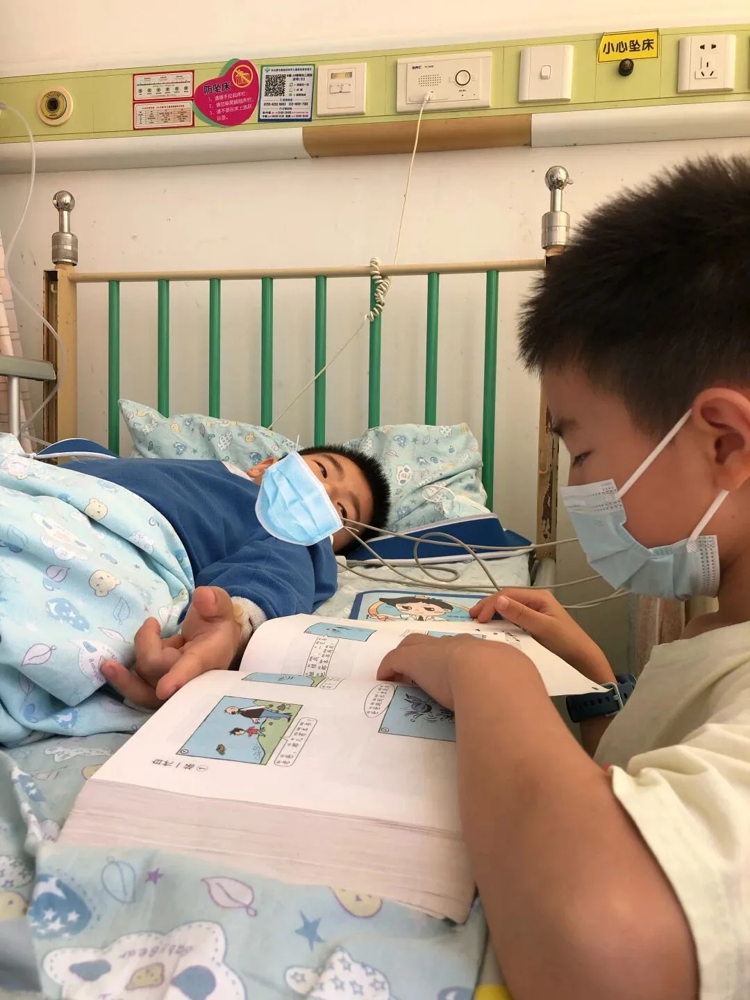
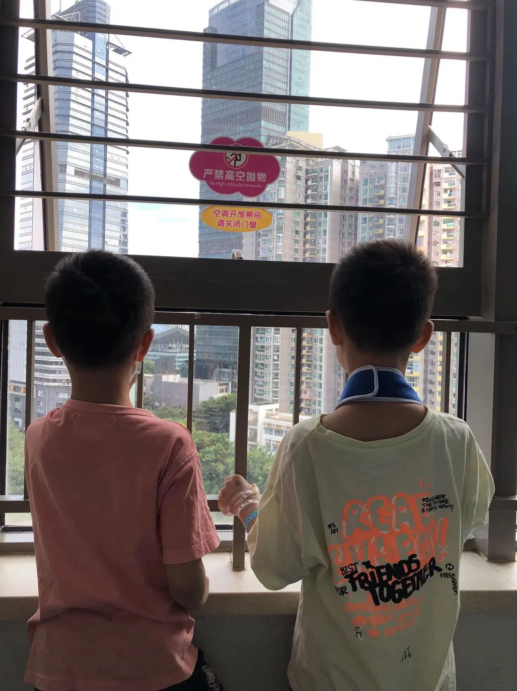

孖仔帮
公众号ID：twinsbang
关注
文|圆圈妈妈
网图|侵删
曾经，我有一个很邪恶的想法，那就是，双胞胎之一受伤了，另一个会怎样？
好的不灵坏的灵，真让我给碰上了。
上周，双胞胎哥哥圆圆在学校摔到右手，桡骨和尺骨鹰嘴青枝骨折。
所幸手术顺利，上了钢钉，打了石膏，住了两天院就回家了，剩下的就是为期3个月的定期复查。
为了验证下双胞胎有没有心灵感应，我找弟弟圈圈进行了一番深刻的探讨！
我问：圈儿，你哥的手摔断时，你在哪里？
圈圈答：在厕所。
我问：那你有什么感觉吗？
圈圈答：有，我憋了两节课的尿尿，尿完之后感觉好爽啊！
我....我继续问：我是指你有没有哪里不舒服，比如手啊？
圈圈答：有，可能是我嘘太久了，手都酸了，呵呵！
我....哎，放弃吧！
一娃生病，全家遭殃！
虽然是短暂的三天两晚医院游，但也损耗了不少脑细胞。
多亏前期累积了大量的住院经验，我和圆圈爸早已熟门熟路了，哪怕是面对受疫情影响导致的层层困难，如只能一人陪护，我们也很快达成一致方案：我在家带圈圈，圆圈爸在医院陪护。
圈圈对他哥住院这一事，有点后知后觉。
第一晚，他没觉得不适应，唯一的感觉就是，咦，家里少了两个人，感觉房子大了很多。
直到第二天早晨起床没看到他哥，他才记得，哦，圆圆受伤了，在住院。
但很快，他的注意力又被新借的漫画书吸引了，看到精彩处还哈哈大笑起来。
我心里想：这厮，哥哥住院不打电话慰问下就算了，还笑得出来。
可能他感知到我的内心独白，终于有反应了...
吃完中饭，他一人心不在焉地搭着积木，突然愣愣地说：“妈妈，我想圆圆了。”
我调侃道：“圆圆在的时候，你不是跟他抢玩具吗？还老打他，现在终于不用抢啦。”
没想到，他竟然说：“那我把玩具都给他，也愿意被他打！”
那一刻，我相信他，说的都是真话。
下午，冲破层层关卡，终于带着圈圈混进了病房，看望刚做完全麻手术的圆圆。
此时的圆圆还处于麻醉状态，术后的疼痛还感觉不到，但精神不是特别好，有点焉焉的样子。
看见圈圈来了，眼神立马放光，一骨碌就爬起来，迫不及待地跟圈圈分享手术的经历和住院的所见所闻，两人就这样倚着窗外叽叽喳喳地聊着。


✦+
+
这一幕真和谐，看惯了他们打打杀杀的样子，我都有点恍惚了：要是他们哥俩一直都这样相亲相爱该多好啊！
但是我的格局，终究是太小了。
男小孩的世界，好斗易冲动爱打架，基因都救不了。
出院后的圆圆因为右手缠着石膏，很多事情都无法自理，一时间难以适应，再加上术后的疼痛，让他的脾气都暴躁了不少。
我和圆圈爸一改往日甩手掌柜的模式，鞍前马后地伺候着，大气不敢出，但是圈圈却没有这个概念。
不谦让就算了，依然一如既往地抢吃抢喝抢玩具抢关注，全然不顾他哥的右手还扎着钢钉，缠着厚厚的绷带。
说好的，双胞胎之间有与生俱来的互相帮助，彼此爱护的成长方式呢？
难道只是个传说？
综上所述，双胞胎之一受伤了，另一个不会怎样，该吃就吃，该喝就喝，该抢的玩具照样抢，该干的架也照样会干起来。

虽然对圈圈没影响，但我却备受煎熬。
因为圆圆受伤的是右手，很多事情他都自理不了，我得给他喂饭，挤牙膏 ，洗澡，穿衣服穿袜子...就好像他小时候那样照顾着。
但这都是小事，最郁闷的是，我们娘仨那本来就不牢固的三角关系，变得更加摇摇欲坠了。
平时他们打架，我都不干预不审判，但现在圆圆是弱势群体，我只能被迫加入他们的内战，遇到危急关头时，担心他会遭到二次伤害，会忍不住出面呵斥圈圈。
圈圈很震惊，想不到平日里事不关己高高挂起的妈妈，竟然会帮着圆圆，他表示无法理解，觉得不公平。
再加上，他这几天看见我360°的大转变，一向凶巴巴的我天天柔情似水地围着圆圆嘘寒问暖，备受冷落的他更委屈了。
有一天，他终于抗议了：“妈妈，为什么你老是叫圆圆不叫我啊，我也想手骨折了。”
吓到我赶紧捂住他的嘴，对着灯光连声说了三句：“阿弥陀佛，童言无忌，大风吹去。”
这可是我内心深处的大忌啊！
从小到大，他们俩不管是生病还是受伤要么同时进行，要么一前一后，妥妥的有难同当。
一起生病可以理解，就是病毒细菌互相传染嘛，但是有时受伤的部位也是出奇地相似，这又作何解释？
我实在无法用科学性的语言去描述，但它就是发生过，就是这么玄乎，而且不是一次两次。
于是，我把圈圈的篮球课和足球课也暂停了，一来是为了与圆圆的课程同步，二来安抚我那颗疑神疑鬼的玻璃心。
若非要说点安慰的话，那就是，圆圆这次右手骨折住院，彻底治愈了我的精神内耗。
前段时间，他们俩在学校表现不好，老是被老师投诉，作业又不认真写，为此，我经常责备他们，母子关系僵到极点。
现在想想才发现，是自己忘本了。
没有什么比孩子的平安健康成长更重要。
那天在急诊外科诊室等待叫号时，看到的患儿家长一律都是灰头灰脸，疲惫不堪，面无表情，累了就坐在椅子上，有时候甚至会席地躺下。
更骇人的是，那些小病患，有拄着拐杖的，有吊着双手的，有坐着轮椅，还有躺在家长怀里不停呻吟嚎哭的...
我突然间，就放过自己了。
我看了一眼坐在边上的圆圆，瞬间泪眼模糊，十分自责！
虽然还不知道他是怎么摔的，但肯定跟我平时把他逼得太紧，压力太大脱不了干系。
此刻的他，受到惊吓忘记了疼痛，一个劲地问我：“妈妈，爸爸来了吗？你和爸爸会陪着我吗？我的手会好起来吗？医生会救我吗？”
我紧紧抱住他，那是一个迟到好久终于有点温度的拥抱。
会的！有爸爸妈妈在，你一定会没事的！
有一个博主写得极是：
突然不想训你了，只是调皮捣蛋而已，
又不是十恶不赦，平安健康就好。
妈妈很平庸，也接受你的平庸，
不要求你做最好的孩子 ，
因为你也从未要求过我，
做最好的妈妈。
-END-
微信公众号：孖仔帮
ID : twinsbang
专注双胞胎孕育，养育，教育经验分享
扫码关注我们
点一下你会更好看耶